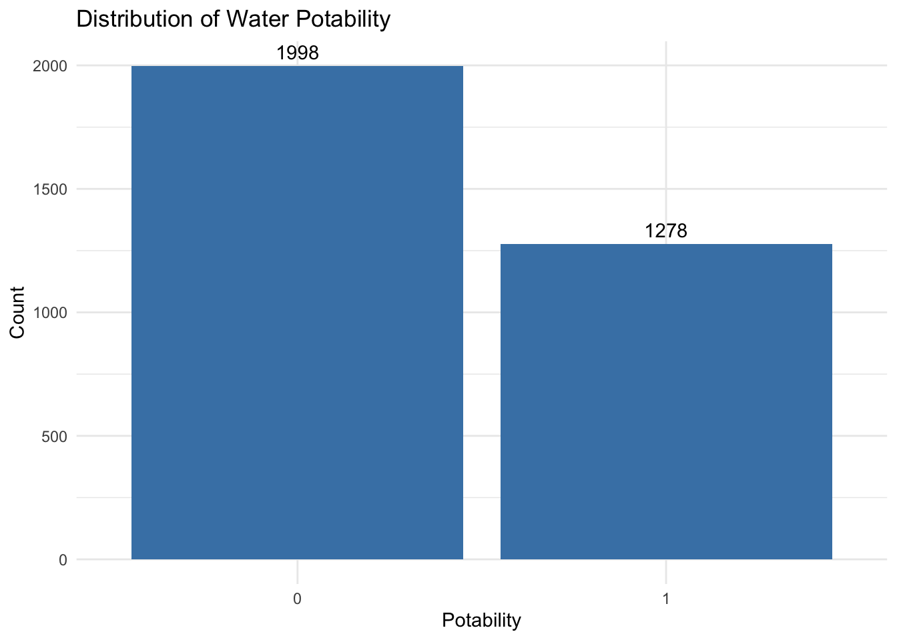
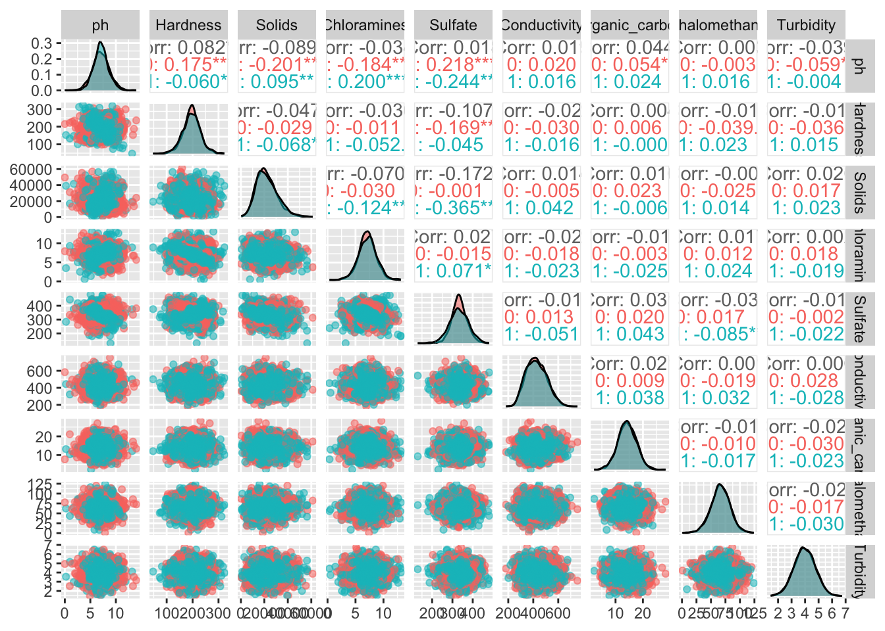

Access to safe drinking water is an important public health concern. This project examines a water quality dataset containing measurements of several chemical and physical characteristics of water samples. The goal is to determine whether these measurements can be used to predict whether a sample is safe for drinking.
The response variable for this analysis is Potability, which indicates whether a water sample is safe to drink. A value of 1 represents potable water, while a value of 0 represents water that is not potable.
The predictor variables available in this dataset include:
ph – pH value of the water.
Hardness – concentration of dissolved calcium and magnesium.
Solids – total dissolved solids (ppm).
Chloramines – concentration of chloramines (ppm).
Sulfate – sulfate concentration (mg/L).
Conductivity – electrical conductivity of the water.
Trihalomethanes – concentration of trihalomethanes (μg/L).
Turbidity – measure of water clarity.
The purpose of this exploratory data analysis (EDA) is to better understand the structure of the data, identify missing values, summarize the distributions of the variables, and explore relationships between the predictor variables and water potability. These results will guide the development of predictive models in the modeling portion of this project.
Data
Load the packages we’ll use in this section:
# Load packageslibrary(tidyverse)
── Attaching core tidyverse packages ──────────────────────── tidyverse 2.0.0 ──
✔ dplyr 1.2.1 ✔ readr 2.2.0
✔ forcats 1.0.1 ✔ stringr 1.6.0
✔ ggplot2 4.0.3 ✔ tibble 3.3.1
✔ lubridate 1.9.5 ✔ tidyr 1.3.2
✔ purrr 1.2.2
── Conflicts ────────────────────────────────────────── tidyverse_conflicts() ──
✖ dplyr::filter() masks stats::filter()
✖ dplyr::lag() masks stats::lag()
ℹ Use the conflicted package (<http://conflicted.r-lib.org/>) to force all conflicts to become errors
library(GGally)
Read in our data:
# Import the datawater_data <-read_csv("water_potability.csv")
Rows: 3276 Columns: 10
── Column specification ────────────────────────────────────────────────────────
Delimiter: ","
dbl (10): ph, Hardness, Solids, Chloramines, Sulfate, Conductivity, Organic_...
ℹ Use `spec()` to retrieve the full column specification for this data.
ℹ Specify the column types or set `show_col_types = FALSE` to quiet this message.
Looks like the ph, Sulfate, and Trihalomethanes variables have 491, 781, and 162 missing values, respectively. These missing values will be addressed during the modeling stage. Since the purpose of this document is exploratory, no imputation is performed here.
Distribution of the Response Variable
Lets check the how our response variable is distributed.
ggplot(water_data, aes(x = Potability)) +geom_bar(fill ="steelblue") +geom_text(stat ="count", aes(label =after_stat(count)), vjust =-0.5) +labs(x ="Potability",y ="Count",title ="Distribution of Water Potability") +theme_minimal()

Summary Statistics
To begin the exploratory analysis, summary statistics were calculated separately for potable and non-potable water samples. Comparing the means and standard deviations provides an initial indication of whether the predictor variables differ between the two response groups.
While several variables show modest differences in their average values, no single predictor appears to completely distinguish potable from non-potable water. This suggests that a predictive model incorporating multiple variables may be more effective than relying on any individual measurement.
Pairs Plot
This ggpairs output provides a comprehensive summary of the relationships among the predictor variables.
Warning: Removed 1160 rows containing missing values or values outside the scale range
(`geom_point()`).
Warning: Removed 781 rows containing missing values or values outside the scale range
(`geom_point()`).
Removed 781 rows containing missing values or values outside the scale range
(`geom_point()`).
Removed 781 rows containing missing values or values outside the scale range
(`geom_point()`).
Warning: Removed 781 rows containing non-finite outside the scale range
(`stat_density()`).
Warning: Removed 627 rows containing missing values or values outside the scale range
(`geom_point()`).
Warning: Removed 162 rows containing missing values or values outside the scale range
(`geom_point()`).
Removed 162 rows containing missing values or values outside the scale range
(`geom_point()`).
Removed 162 rows containing missing values or values outside the scale range
(`geom_point()`).
Warning: Removed 903 rows containing missing values or values outside the scale range
(`geom_point()`).
Warning: Removed 162 rows containing missing values or values outside the scale range
(`geom_point()`).
Removed 162 rows containing missing values or values outside the scale range
(`geom_point()`).
Warning: Removed 162 rows containing non-finite outside the scale range
(`stat_density()`).
Warning: Removed 491 rows containing missing values or values outside the scale range
(`geom_point()`).
Warning: Removed 781 rows containing missing values or values outside the scale range
(`geom_point()`).
Warning: Removed 162 rows containing missing values or values outside the scale range
(`geom_point()`).

The diagonal density plots indicate that most predictor variables have unimodal distributions with substantial overlap between potable and non-potable water samples. The scatterplots do not indicate any strong linear relationships between predictor variables, and the correlation coefficients confirm that most pairwise correlations are relatively weak (|r| < 0.37). Overall, the exploratory analysis suggests that no single predictor is sufficient to classify water potability on its own. Instead, combining several predictors within a machine learning model is likely to provide greater predictive performance.
Discussion
The exploratory analysis suggests that predicting water potability is likely to be a challenging classification problem. The predictor variables do not exhibit strong separation between potable and non-potable samples individually, and the relationships among predictors are generally weak. Consequently, it is unlikely that any single variable will provide accurate predictions on its own. Instead, machine learning methods that combine information from multiple predictors may be better suited for identifying patterns associated with water potability. The next section therefore develops and compares classification tree and random forest models using the tidymodels framework